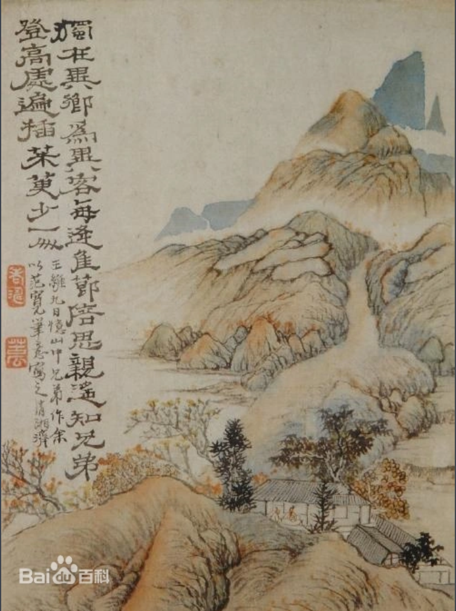
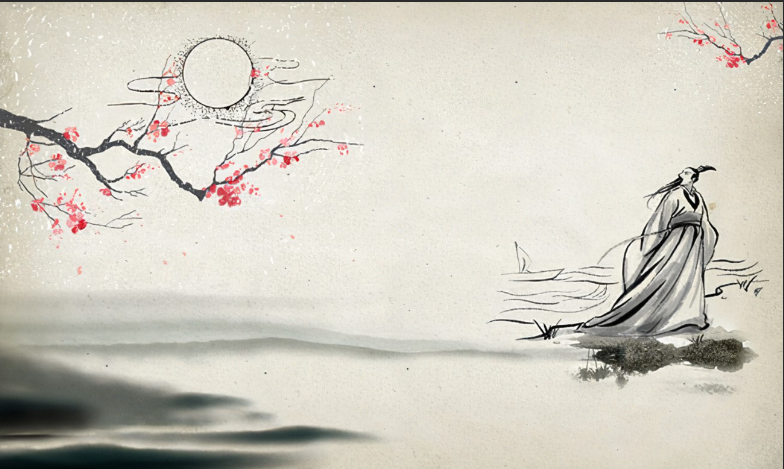

00:00:00
-----上面的时钟现在还不知开发原理-----
九月九日忆山东兄弟 王维〔唐代〕 独在异乡为异客，每逢佳节倍思亲。 遥知兄弟登高处，遍插茱萸少一人。
临安春雨初霁 陆游〔宋代〕 世味年来薄似纱，谁令骑马客京华。 小楼一夜听春雨，深巷明朝卖杏花。 矮纸斜行闲作草，晴窗细乳戏分茶。 素衣莫起风尘叹，犹及清明可到家。
春江花月夜 张若虚〔唐代〕 春江潮水连海平，海上明月共潮生。 滟滟随波千万里，何处春江无月明。 江流宛转绕芳甸，月照花林皆似霰。 空里流霜不觉飞，汀上白沙看不见。 江天一色无纤尘，皎皎空中孤月轮。 江畔何人初见月？江月何年初照人？ 人生代代无穷已，江月年年望相似。 不知江月待何人，但见长江送流水。 白云一片去悠悠，青枫浦上不胜愁。 谁家今夜扁舟子？何处相思明月楼？ 可怜楼上月裴回，应照离人妆镜台。 玉户帘中卷不去，捣衣砧上拂还来。 此时相望不相闻，愿逐月华流照君。 鸿雁长飞光不度，鱼龙潜跃水成文。 昨夜闲潭梦落花，可怜春半不还家。 江水流春去欲尽，江潭落月复西斜。 斜月沉沉藏海雾，碣石潇湘无限路。 不知乘月几人归，落月摇情满江树。